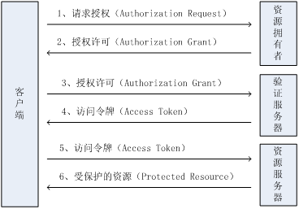

参考： 帮你深入理解OAuth2.0协议 OAuth2集成——《跟我学Shiro》
目前实现开放授权的方法分为两种：一种是使用OAuth协议[1]；另一种是使用IAM服务[2]。OAuth协议主要适用于针对个人用户对资源的开放授权，比如Google的用户Alice。OAuth的特点是“现场授权”或“在线授权”：客户端主要通过浏览器去访问资源，授权时需要认证Alice的资源所有者身份，并且需要Alice现场审批。OAuth一般在SNS服务中广泛使用，如微博。IAM服务则不同，它的特点是“预先授权”或“离线授权”：客户端主要通过REST API方式去访问资源，资源所有者可以预先知道第三方应用所需要的资源请求，一次授权之后，很少会变更。IAM服务一般在云计算服务中使用，如AWS服务、阿里云计算服务。

参考： Session Authentication vs Token Authentication Control the Session with Spring Security
In Token-based Authentication no session is persisted server-side (stateless). The initial steps are the same. Credentials are exchanged against a token which is then attached to every subsequent request (It can also be stored in a cookie). However for the purpose of decreasing memory usage, easy scale-ability and total flexibility (tokens can be exchanged with another client) a string with all the necessary information is issued (the token) which is checked after each request made by the client to the server. There are a number of ways to use/ create tokens:
a) using a hash mechanism e.g. HMAC-SHA1
token = user_id|expiry_date|HMAC(user_id|expiry_date, k) --id and expiry_id are sent in plaintext with the resulting hash attached (k is only know to the server)
b) encrypting the token symmetrically e.g. with AES
token = AES(user_id|expiry_date, x) --x represents the en-/decryption key
c) encrypting it asymmetrically e.g. with RSA
token = RSA(user_id|expiry_date, private key)
Productive systems are usually more complex than those two archetypes. Amazon for example uses both mechanisms on its website. Also hybrids can be used to issue tokens as described in 2 and also associate a user session with it for user tracking or possible revocation and still retain the client flexibility of classic tokens. Also OAuth 2.0 uses short-lived and specific bearer-tokens and longer-lived refresh tokens e.g. to get bearer-tokens.